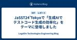

LegalOn Technologies Engineering Blog
https://tech.legalforce.co.jp/
LegalOn Technologies 開発チームによるブログです。
フィード

JaSST24’Tokyoで「生成AIでテストコード生成の効率化」をテーマに登壇しました 2
2
LegalOn Technologies Engineering Blog
2024年3月の14〜15日に開催されたJaSST’24 Tokyoというソフトウェアテストシンポジウムに「生成AIを使ったテスト記述の最適化と生産性向上」をテーマに登壇しました。 こんにちは！LegalOn TechnologiesでSoftware Engineer in Test（SET）をしている山本です。 本記事では、登壇の発表内容や感想についてお話できればと思います。 ※オンライン登壇であったため、写真を用意することができず申し訳ありません。 セッション概要
12日前

Lucene/Elasticsearch の Character Filter でユニコード正規化するとトークンのオフセットがズレるバグへの Workaround
LegalOn Technologies Engineering Blog
pre.code{ white-space: pre; overflow-x: scroll; } こんにちは、LegalOn Technologiesでエンジニアをしている神田（@kampersanda）です。 この記事の内容 Elasticsearch の Character Filter でユニコード正規化を適用したとき、Tokenizer の結果によってはトークンのオフセットに不正な値が入るバグが報告されています。 github.com 頻繁に起こるケースでは無いのですが、実際にデータを Elasticsearch に取り込む際に発生しており、恒久的な対応が必要です。本記事では、そのバ…
1ヶ月前
ネットワーク分析を用いた文書参照関係の分析
LegalOn Technologies Engineering Blog
はじめに 株式会社LegalOn Technologies でデータアナリストをしている高木 要です。LegalOn Technologiesではデータ分析業務に積極的に取り組んでおり、我々データアナリストチームは各部門のステークホルダーとともに製品やビジネスの価値をデータから評価できるようにデータ分析を行なっています。分析内容は多岐に渡り、製品利用状況や営業データなどを用いて、プロダクト開発やビジネスにおける意思決定精度の向上に努めています。 今回は「ネットワーク分析を用いたお客様の法律文書ナレッジマネジメント状況の可視化」についてご紹介いたします。
2ヶ月前
Jaccard係数に基づく類似文書検索の高速化技法
LegalOn Technologies Engineering Blog
こんにちは、LegalOn Technologiesでエンジニアをしている神田（@kampersanda）です。 本記事では、Jaccard係数に基づく類似文書検索の高速化技法を解説し、契約書検索での実験結果を報告します。
3ヶ月前
「生成 AI を搭載したプロダクト開発」というタイトルでデブサミ2024に登壇しました！
LegalOn Technologies Engineering Blog
こんにちは！LegalOn Technologiesのソフトウェアエンジニア、渡辺です。 2024年2月15日から16日にかけて開催された"Developers Summit 2024"（以下、デブサミ）に参加し、「生成AIを搭載したプロダクト開発～少人数で爆速リリースしてわかったこと～」というテーマで発表しました。 今回は、発表までの過程、スケジュール、発表内容、そして発表後の感想について書かせていただきます。
4ヶ月前
4年ぶりの開催！検索技術勉強会 - 2023 - イベントレポート＆インタビュー
LegalOn Technologies Engineering Blog
こんにちは、LegalOn Technologiesにてエンジニアリング推進グループに所属の荒木と申します。 2023年12月20日、弊社オフィスにて「検索技術勉強会(以降 勉強会)」が開催されました。 この勉強会の内容と「なぜオフライン勉強会を再開したのか」について、弊社の検索・推薦グループのエンジニアへインタビューを行いました。本記事ではこれらについてレポートします。
5ヶ月前
検索クエリパーサー自作入門
LegalOn Technologies Engineering Blog
はじめに こんにちは。株式会社LegalOn Technologies でエンジニアをしております、勝田(@WinField95)です。この記事は、情報検索・検索技術 Advent Calendar 2023 の 20日目の記事として執筆されました。 この記事では、ANTLR[1]を使用したシンプルなクエリ構文の解析を行う検索クエリパーサーの生成と、解析結果から Elasticsearch の Query DSL[2]への変換までのプロセスと簡単な実装を紹介します。実務では、要求に応じて複雑なクエリ構文の文法定義が必要になる場合もありますが、この記事ではなるべく簡単なクエリ構文を取り扱います。…
6ヶ月前
シフトレフトを実現する仕様確認会：QAエンジニア主導の新たな取り組み
LegalOn Technologies Engineering Blog
はじめに こんにちは。株式会社LegalOn Technologies で品質保証（QA）エンジニアをしております、リンです。 2021年にLegalOn Technologiesでキャリアをスタートしました。入社当時、QAチームはたった3人で、品質保証プロセスもまだ発展途上でした。時間が経つにつれ、会社は急速に成長し、現在では、QAエンジニアの数も19人に増えています。組織が成長すると共に、最も効果的な品質保証プロセスを見つけるための探求は続いています。 この記事では、その過程で取り入れた新しい取り組みについて説明します。
7ヶ月前
社内勉強会で使用したSimCSEのチュートリアル資料を公開しました
LegalOn Technologies Engineering Blog
こんにちは、LegalOn Technologies Researchで研究員をしている神田（@kampersanda）です。 弊社では、検索チーム主催でセマンティック検索とベクトル検索に関する社内勉強会を定期的に実施しています。この勉強会では、技術に関心のあるエンジニアが有志で議題を持ち寄り、知識共有を行っています。 その成果のひとつとして、文埋め込み技術であるSimCSEのチュートリアル資料を作成し、以下に公開しました。 github.com この資料はNotebookとして作成されており、SimCSEの学習から評価までの一連の動作を簡単に試して頂くことができます。また、コードの各パートに…
8ヶ月前
PyCon APAC 2023 に参加してきました
LegalOn Technologies Engineering Blog
はじめに こんにちは、LegalOn Technologies 検索チームの志水です。 2023/10/27と28に開催された PyCon APAC 2023 に参加したので、そのレポートをお送りします。 2日間あるイベントのうち、初日は私によるレポート、2日目はチームリーダーの打田によるレポートをお届けします。
8ヶ月前
Looker System Activity を低コストなサーバレスイベント駆動パイプラインで BigQuery へ取り込む
LegalOn Technologies Engineering Blog
はじめに 株式会社LegalOn Technologies でデータエンジニアリングをしている 田中 晶 です。 LegalOn Technologies では、データドリブンな意思決定をするために、データ分析基盤や BI ツールの整備を行い、プロダクトに関わる多くの社員がデータを活用できる状態を維持し、さらなる活用を目指しています。 過去の啓蒙活動や整備の甲斐もあり、現在弊社で利用しているBIツールである Looker のライセンスは多くの社員に付与されており、またその活用も専門職だけでなく、営業部門の活用率も高いという利用率の計測結果も出ているほどです。 このように活用されているデータ分析…
9ヶ月前
LegalOn Technologies のエンジニアグレード評価基準を公開します
LegalOn Technologies Engineering Blog
こんにちは。LegalOn TechnologiesでCTOを務めている深川といいます。 もし私がどういう人なのか気になる方がいましたら、私のことは以下の弊社オープン社内報でも記載していますので、よかったらこちらの記事をご覧いただければと思います。 https://now.legalontech.jp/n/n36b23e19f7b0 エンジニア組織の運営は人数が増えていくにつれて加速度的に難易度があがります。その中でも、エンジニアリングマネージャーにとって常に頭を悩ませるものが人事評価制度です。特に、評価基準については、公正かつ納得感があり、それでいて属人化しない評価基準を作り上げるのは至難の…
1年前
Datadog Session Replayの導入による効果
LegalOn Technologies Engineering Blog
はじめに こんにちは、株式会社LegalOn Technologies (以下 LegalOnと呼びます) SRE&プラットフォームグループの加藤です。 LegalOnでは、2019年4月に『LegalForce』、2021年1月に『LegalForceキャビネ』を正式リリースして以来、機能追加やUI/UXの改善などのアップデート、バックエンドやインフラの改善を行っています。さらにはリリース初期段階では予期できなかった技術的な課題への対応や、発見された不具合の修正も行っています。 サービスにおいて不具合が発生したときの影響は、機能数とユーザー数が増えていくにつれ大きくなります。そのため、万が一…
1年前
IR Reading 2023 Spring 参加レポート
LegalOn Technologies Engineering Blog
こんにちは、検索・推薦チームの浅野（@takuya_b / @takuya_a）です。 2023年6月10日に開催された IR Reading 2023春に、弊社の勝田（検索・推薦）、宮里（検索・推薦）と参加しました。 今回は、そちらの様子をレポート形式でお届けします。
1年前
セキュリティインシデント対応の体系化
LegalOn Technologies Engineering Blog
こんにちは、株式会社LegalOn TechnologiesでCSIRTのリーダーを務めている今成と申します。 本記事では、LegalOn Technologies（以下 LegalOn）におけるCSIRTのセキュリティインシデント対応に係るプロセスおよび管理方法を、体系的に整理した事例をご紹介します。企業のセキュリティ担当者の方々に、セキュリティインシデント対応の事前準備という観点で、参考になる情報を記載しています。ぜひ最後までお読みください。
1年前
宣言的DBスキーマ管理ツールの導入
LegalOn Technologies Engineering Blog
こんにちは、SRE&プラットフォームグループの和田です。LegalOn Technologiesでは、2019年4月に「LegalForce」、2021年1月に「LegalForceキャビネ」を正式リリースして以来、毎月機能アップデートをしています。また、リリース初期段階では予期できなかった技術的な課題に対処するために、バックエンドやインフラの改善も進めています。このような取り組みの中で、DBスキーマの更新も多数発生してきました。「LegalForce」では、シーケンシャルなDBスキーマ管理を採用していましたが、運用面での懸念が顕在化していました。一方、「LegalForceキャビネ」は、No…
1年前
mablからPlaywrightに移行しました
LegalOn Technologies Engineering Blog
こんにちは！ 株式会社LegalOn TechnologiesのLegalForceキャビネ開発部SET（Software Engineer in Test）のひきもち（@rmochioo）です。 昨年8月に入社し、LegalForceキャビネのAPIテスト、自動E2Eテストなどの自動テストの導入、QA業務まで幅広く携わっております。 APIテストに関しては先日、記事出ていますのでご興味があれば見ていただければと思います。 tech.legalforce.co.jp LegalForceキャビネではE2Eテストの自動化ツールとしてmablを利用していましたが、この度Playwrightへの移行…
1年前
論文「Engineering faster double-array Aho-Corasick automata」が学術誌「Software: Practice and Experience」に採択
LegalOn Technologies Engineering Blog
こんにちは。LegalOn Technologies Researchで研究員をしている神田 (@kampersanda) です。 この度、論文「Engineering faster double-array Aho-Corasick automata」がソフトウェア系の有名学術誌「Software: Practice and Experience」に採択されました。 ArXiv Link Shareable Read-only Link 本記事では論文の紹介をします。論文内に記述された内容については簡単な概要紹介に留め、論文には書かれていない研究の動機などをメインにお伝えします。
1年前
Firebase 使用上の注意(Functions 編)
LegalOn Technologies Engineering Blog
初めに こんにちは、株式会社 LegalOn Technologies の LegalForceキャビネ開発部でテックリードを務めている横道と申します。 私たちのプロダクト、「LegalForceキャビネ(以下キャビネ)」では Google Firebase を使用しています。 この Google Firebase を、実際のプロダクト開発と運用で使用した際に生じた課題と対応ついて、「Firebase 使用上の注意 Functions 編」「同 Firestore 編」の 2 つに分けてお送りします。 今回は Functions 編として、Firebase Functions を使ったプロダク…
1年前
イベント駆動型アーキテクチャで実現する Query Auto Completion 更新
LegalOn Technologies Engineering Blog
こんにちは、株式会社LegalOn Technologies の検索・推薦チームでエンジニアをしている、佐藤です。 弊社では LegalForce という製品で、お客様がアップロードした契約書を条文単位で検索ができる、条文検索機能を提供しています。 条文検索では既に契約書本文の Query Auto Completion (クエリ自動補完, 以下 QAC)が提供されており (*1)、今回は契約書のタイトルやファイル名などで絞り込み検索を行う際に利用される QAC の開発を行いました。
1年前
APIテストで質とスピードの両立を実現 - LegalForceキャビネの事例
LegalOn Technologies Engineering Blog
こんにちは、株式会社LegalOn TechnologiesのLegalForceキャビネ開発部でQAリードを務めている島根（@shimashima35）と申します。 QAというとマニュアルテストが中心かと思われるかもしれません。確かにマニュアルテストはQAの業務の一部ではありますが、「質とスピードの両立」つまりプロダクト品質の高さとリリーススピードの両立を目指すため自動テストの導入もおこなっています。 今回はLegalForceキャビネのバックエンドに対するAPIテストを実装した話をご紹介します。
1年前
Rustで標準ライブラリのHashMapの代わりにhashbrownを使う
LegalOn Technologies Engineering Blog
こんにちは。株式会社LegalOn Technologies でエンジニアをしている赤部です。 自然言語処理をしていると、単語の出現回数を数えたり、単語と何らかのデータを紐付けたりすることが頻繁に必要になります。これらのことを簡単に行える、最も一般的でよく知られたデータ構造はハッシュマップではないでしょうか？ プログラミング言語 Rust では、標準ライブラリの std::collections::HashMap を用いればハッシュマップを簡単に導入できます。しかし、場合によっては標準ライブラリの HashMap ではなく hashbrown クレートを利用したほうが、シンプルに効率的なコード…
1年前
GitHub Codespacesの導入
LegalOn Technologies Engineering Blog
こんにちは、LegalOn TechnologiesのLegalForce開発部のSRE 伊藤です。 私たちのチームでは、LegalForceの安定稼働と同様に、開発者がより楽に開発・運用できるような基盤を提供することをミッションにさまざまな改善活動を行なっています。 今回はGitHub CodespacesをLegalForceのバックエンドの開発に導入した話をご紹介します。
2年前
マルチテナンシーSaaSを支える Elasticsearch Index 設計
LegalOn Technologies Engineering Blog
こんにちは。株式会社 LegalOn Technologies でエンジニアをしております、勝田(@WinField95)です。この記事は、情報検索・検索技術 Advent Calendar 2022 の 22日目の記事として執筆されました。LegalForce キャビネについて紹介すると共に、社内で運用されている検索システムを作り直したきっかけとなった課題と改善点についてお話します。
2年前
外部サービス利用規約の読み方
LegalOn Technologies Engineering Blog
※ 本稿で紹介している内容はあくまで参考情報です。実際の場面では、自社の法務担当者や弁護士等の専門家に相談ください。 LegalForceの開発本部長（肩書が固いですが、プロダクトマネジャーをやっています）川戸（ @kawato_takashi ）です。 今回は外部サービスを利用する場合の特にビジネス観点からの留意点を解説します。外部サービスとは、ここでは一般にオープンソースで提供されているライブラリ等ではなく、商用で提供されているサービスを想定しています。OSSの場合にはGNU-GPL, MIT Licenseなど一般的なライセンスを中心に標準化が進んでいるのに対し、商用ソフトウェアの利用規…
2年前
MeCab互換な形態素解析器Vibratoの高速化技法
LegalOn Technologies Engineering Blog
こんにちは。LegalForce Researchで研究員をしている神田 (@kampersanda) です。 LegalForce Researchでは、MeCab互換の形態素解析器Vibrato（ヴィブラ〰ト）を開発しています。プログラミング言語Rustで実装しており、高速に動作することが主な利点です。Vibratoはオープンソースソフトウェアとして以下のレポジトリで公開しています。 github.com 本記事では、Vibratoの技術仕様を解説します。以下のような方を読者として想定します。 自然言語処理の要素技術に興味のある方 データ構造・アルゴリズムに興味のある方 Rustでの自然言…
2年前
高速な文字列探索：Daachorseの技術解説
LegalOn Technologies Engineering Blog
こんにちは。LegalForce Researchで研究員をしている神田 (@kampersanda) です。 LegalForce Researchでは現在、高速なパターンマッチングマシン Daachorse（ダークホース）を開発・運用しています。文字列処理の基礎である複数パターン検索を提供するRust製ライブラリです。以下のレポジトリで公開されています。 github.com 本記事はDaachorseの技術仕様を解説します。具体的には、 複数パターン検索に関係する基礎技術（トライ木・Aho–Corasick法・ダブル配列） Daachorseの実装の工夫と性能 を解説します。 以下のよう…
2年前
サービス無停止でElasticsearchのReindexを行うノウハウ
LegalOn Technologies Engineering Blog
こんにちは。LegalForce でエンジニアをしております、勝田(@WinField95)です。この記事は、情報検索・検索技術 Advent Calendar 2021 の 21日目の記事として執筆されました。LegalForce と LegalForce キャビネについて紹介すると共に、Reindex の実施に伴い生じた課題と具体的な対応について社内で実践している内容をお話します。
3年前
速度の高みを目指す：高速な単語分割器 Vaporetto の技術解説
LegalOn Technologies Engineering Blog
こんにちは。LegalForce Research でエンジニアをしている赤部 (@vbkaisetsu) です。 今回は、弊チームが開発した新しい高速な単語分割器 Vaporetto（ヴァポレット）の技術解説を行います。Vaporetto はプログラミング言語 Rust で開発されています。想定する読者は、 自然言語処理のアルゴリズムに興味がある人 Rust によるプログラミングに興味がある人 です。 単語分割器 Vaporetto はオープンソースソフトウェアであり、ソースコードは以下のリポジトリで公開しています。 https://github.com/legalforce-researc…
3年前
新製品を作り、育て続けるための組織デザイン
LegalOn Technologies Engineering Blog
こんにちは。LegalForce COO 川戸（@kawato_takashi）です。 今回は、LegalForceの開発組織での直近の組織変更について、その意図と背景をお伝えします。読者としては下記の二通りを想定しています。 弊社をご検討いただいている候補者に正しい最新の情報をご共有すること。 複数製品を開発・運営する上での組織課題に関心があるエンジニアリングマネジャーやプロダクトマネジャーに、弊社の経験をご共有すること。 LegalForceでは、タイトルにもある通り、「新製品を作り、育て続ける」ということを開発における大きい課題と捉えています。売り上げの大きい既存製品を優先する力学は、組…
3年前